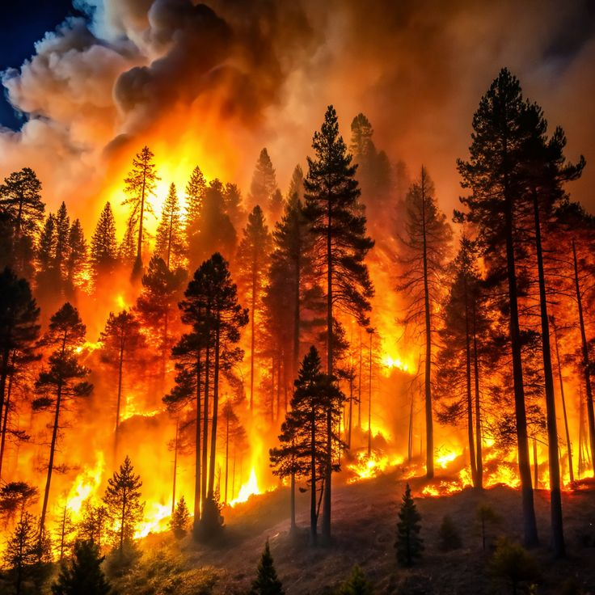

Effects of global warming
Glacier Melting

Glacier melting is one of the most visible effects of global warming. Rising global
temperatures cause glaciers to shrink and retreat, reducing the amount of stored freshwater. This
contributes to sea level rise, which threatens coastal communities, and disrupts ecosystems that depend on
glacial runoff. The loss of glaciers also reduces the Earth's ability to reflect sunlight, further
accelerating climate change.
Drought Land
Global warming leads to higher temperatures and changes in rainfall patterns, causing prolonged dry periods
in many regions. As a result, fertile land becomes dry and cracked, turning into drought-affected land.
This reduces water availability, harms crops and vegetation, and threatens food security. Over time, it
can lead to desertification and force communities to migrate in search of better living conditions.

Extreme Heat

Global warming leads to higher temperatures and changes in rainfall patterns, causing prolonged dry periods
in many regions. As a result, fertile land becomes dry and cracked, turning into drought-affected land.
This reduces water availability, harms crops and vegetation, and threatens food security. Over time, it
can lead to desertification and force communities to migrate in search of better living conditions.
Forest fire
Global warming has intensified forest fires across the globe by increasing temperatures and drying out
vegetation. Prolonged heatwaves and reduced rainfall create ideal conditions for wildfires to ignite and
spread
rapidly. These fires not only destroy vast forest areas and wildlife habitats but also release large amounts
of
carbon dioxide, further fueling climate change in a dangerous feedback loop.
